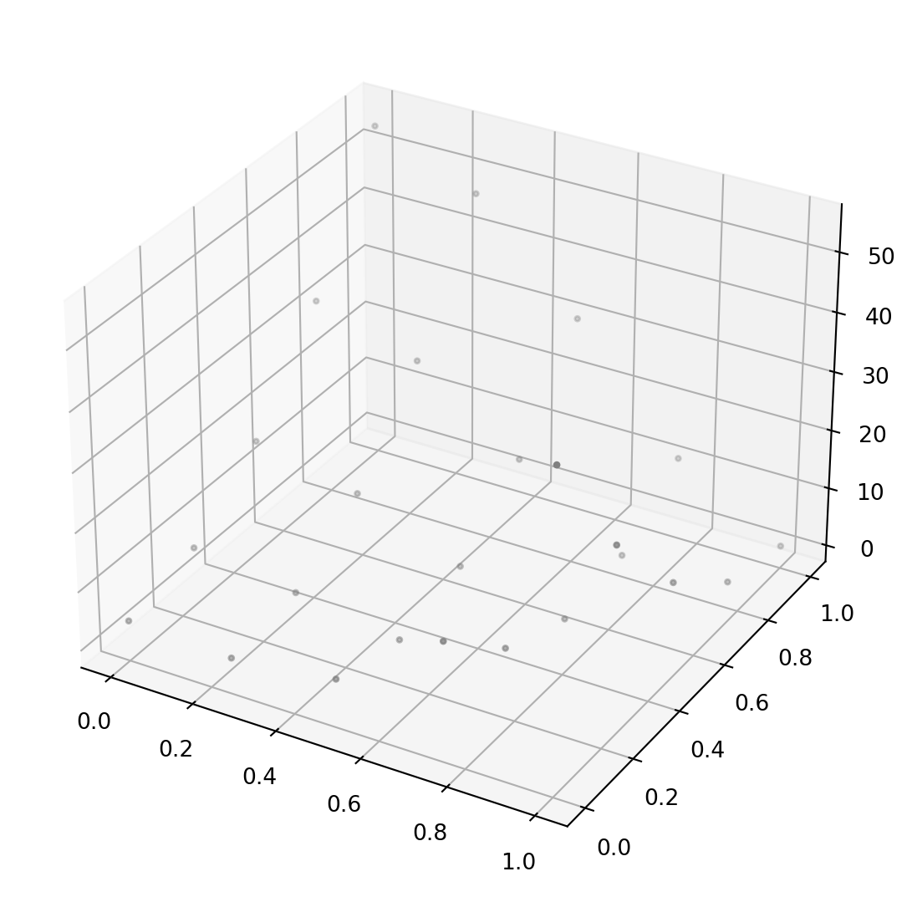

Code
import numpy as np
import matplotlib.pyplot as plt
fig = plt.figure(figsize=(7, 7))
ax = plt.axes(projection='3d')
x1=np.linspace(0,1,5)
x2=np.linspace(0,1,5)
x1,x2 = np.meshgrid(x1,x2) # multivariate scalar function 만들 때 사용
print(x2) #x 축으로 값이 불변하고 y축으로는 값이 변함
z = 50*(x2 - x1**2)**2 + (2-x1)**2
print(z)
ax.scatter3D(x1, x2, z, marker='.', color='gray')
plt.show()[[0. 0. 0. 0. 0. ]
[0.25 0.25 0.25 0.25 0.25]
[0.5 0.5 0.5 0.5 0.5 ]
[0.75 0.75 0.75 0.75 0.75]
[1. 1. 1. 1. 1. ]]
[[ 4. 3.2578125 5.375 17.3828125 51. ]
[ 7.125 4.8203125 2.25 6.4453125 29.125 ]
[16.5 12.6328125 5.375 1.7578125 13.5 ]
[32.125 26.6953125 14.75 3.3203125 4.125 ]
[54. 47.0078125 30.375 11.1328125 1. ]]